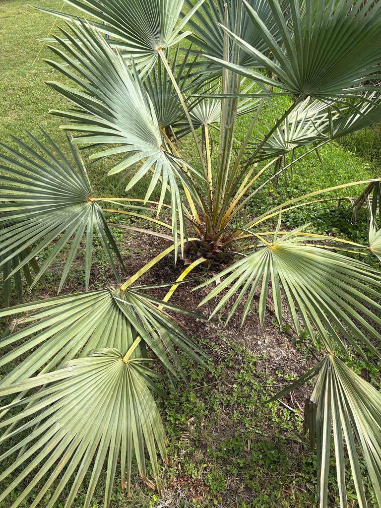

- To global industry this palm is the 'Tree of Life' — the source of the world's most valuable natural wax. But the indigenous Tupi peoples who lived alongside it named it for something else entirely: the curved spines lining every leaf stalk. 'Carnaúba' means 'tree that scratches.'
- The wax coating on these fan leaves is the palm's own evolutionary armor — secreted directly onto leaf surfaces to lock in moisture while the Caatinga bakes dry for months at a time. That same biological compound ends up in car polish, lipstick, dental floss, and the hard candy shell on M&Ms, with a melting point around 180 to 187 degrees Fahrenheit — higher than any other commercial natural wax.
- This palm can live up to 200 years, and Brazil accounts for more than 85 percent of the world's carnauba wax supply — an industry built almost entirely on hand-harvesting leaves from wild trees.
- The genus Copernicia is named for the astronomer Nicolaus Copernicus — a tribute, like many botanical names of the era, chosen because the namer admired the man.
The Carnaúba Palm is native to the Caatinga biome of northeastern Brazil — a semi-arid region covering roughly 800,000 square kilometers across states including Ceará, Piauí, Maranhão, Rio Grande do Norte, and Bahia. It is the state tree of Ceará.
Despite its adaptation to a dry climate, the palm typically grows in dense stands along river valleys and flood zones where roots can reach groundwater during the long dry season. It tolerates both periodic drought and seasonal inundation — a combination few palms can manage.
It is also the official symbol tree of the state of Ceará, where efforts to promote sustainable harvesting of its wax have helped frame conservation of the species as an economic as well as ecological priority. In Florida it is grown as a specimen palm, primarily in botanical gardens and private tropical collections.
- The genus name Copernicia honors Nicolaus Copernicus (1473–1543), the astronomer who proposed a heliocentric model of the solar system. The species epithet prunifera means 'plum-bearing' — a reference to the palm's small, round, dark fruit.
- The wax coating on the leaves is not incidental — it is the palm's solution to a punishing dry season. When rain stops for months at a time, the Caatinga bakes and most plants struggle or go dormant. The carnaúba secretes a layer of wax over both leaf surfaces, dramatically slowing water loss and allowing the palm to stay active and green while the landscape around it dries out.
- Harvesters collect leaves during the dry season, sun-dry them, then beat the shriveled blades to knock the powdery wax loose. The raw material is then melted, strained, and cooled into the hard yellow-brown flakes traded worldwide. Brazil exports more than 85 percent of global supply, nearly all of it from wild trees rather than plantations.
- The trunk tells its own story in geometry. The lower two-thirds are sheathed in a dense, spiraling staircase of old petiole bases — each one a knobby callus left behind when a frond dropped away, packed so tightly they form a rough, armored column. Then, abruptly, the trunk transitions to smooth gray wood near the crown, as if the tree switched architectural modes halfway up.
The inflorescences are about two meters long, emerge interfoliar among the leaves, and bear hermaphroditic (bisexual) flowers visited by insects — the palm is primarily insect-pollinated, with some wind pollination as well. The small, round, blackish fruits that follow are eaten by birds and other wildlife both in the palm's native range and in cultivation.
In northeastern Brazil the palm plays a notable role in local bird ecology. The Fork-tailed Palm-Swift, which builds tiny feather-and-saliva nests inside dead, folded pendant leaves, uses the carnaúba as a nesting site in parts of its range where its preferred host palm is absent.
In Florida cultivation, where the palm has no co-evolutionary wildlife relationships, its primary value to local fauna is as a fruit source and opportunistic perch or nesting substrate for birds.
Bisexual (hermaphroditic) flowers are small and yellowish-white, borne on heavily branched inflorescences about two meters long that emerge from among the leaves and barely extend beyond the crown. Both male and female function occur in the same flower on the same tree, so any individual can set fruit without a separate pollen source nearby.
Small, ovoid to round drupes roughly one inch in diameter, ripening from green to glossy black. Each fruit contains a single seed. The fruit pulp is edible and used in Brazil for jellies and flour; the roasted seeds have historically been brewed as a coffee substitute.
Costapalmate fan leaves nearly circular in outline, up to roughly five feet across and deeply divided into stiff segments. Color ranges from yellowish-green to blue-green, with a heavier wax coating on the underside. Petioles are about two to three feet long and lined with robust curved spines along both margins.
Solitary, gray, and roughly ten inches in diameter at maturity. The lower two-thirds of the trunk retain the persistent, spirally arranged bases of shed petioles, giving it a knobby, armored texture; the upper third tends to be smoother. This spiral pattern — denser below than near the crown — is one of the most distinctive field marks of the species.
Trace the Spiral: start at the base of the trunk and follow the dense, knobby staircase of old petiole bases upward — watch how the trunk abruptly shifts from rough and armored to smooth gray wood as it nears the crown.
Inspect the Underside: look at any frond within reach and find the thick, chalky blue-green wax layer coating the leaf surface — that is the same compound in your car polish and candy shell.
Respect the Teeth: run your eyes (not your hand) along a petiole margin and note the robust curved spines — those are what earned this palm its Tupi name. If the palm is in fruit, scan near the base of the inflorescence for small, glossy black drupes nestled among the leaves.
The petioles carry robust, curved spines along both margins — they will grip and cut without warning, so keep a respectful distance from the crown and never brush past a frond casually.
In northeastern Brazil this palm has historically served as a famine food — the fruit pulp dried into flour, the seeds roasted as a coffee substitute — a legacy that earns it the 'Tree of Life' title and this sign's Yellow edibility flag. The preparation is not casual; leave it to tradition and enjoy the specimen intact.
The wax is food-safe worldwide, and no toxicity to people or dogs has been documented.

- © Randall Carter (CC-BY-NC), via iNaturalist